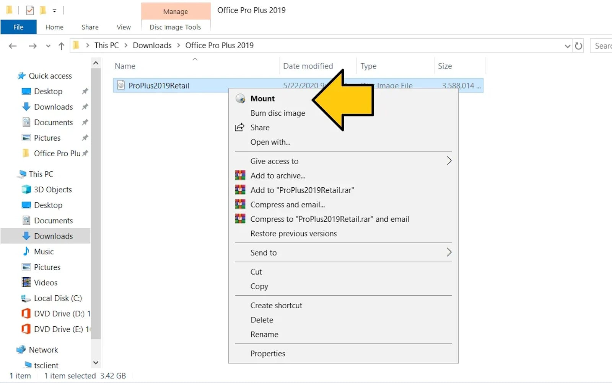
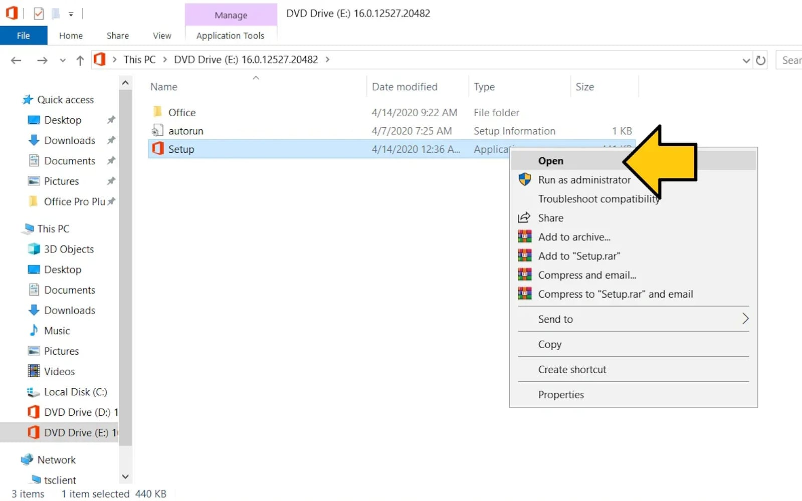
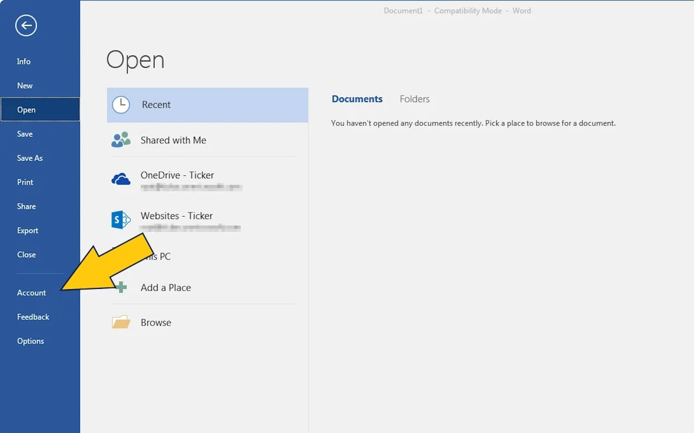
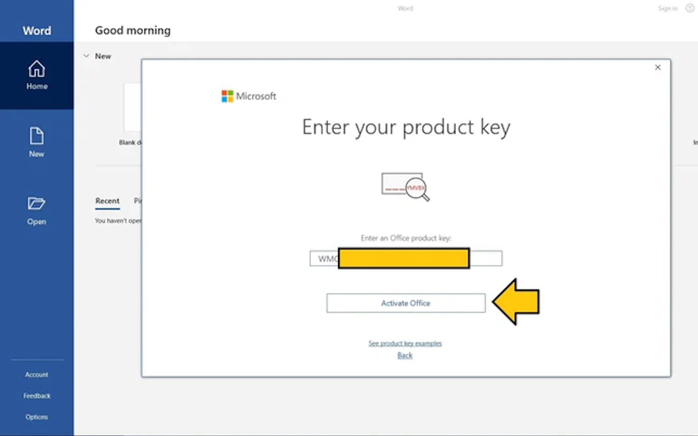
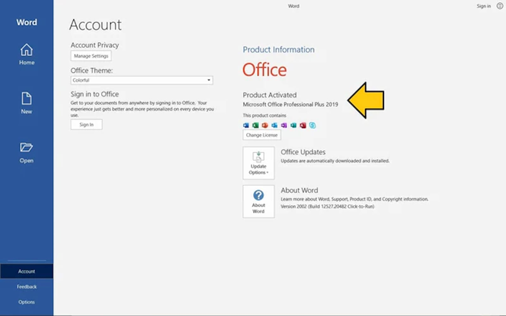
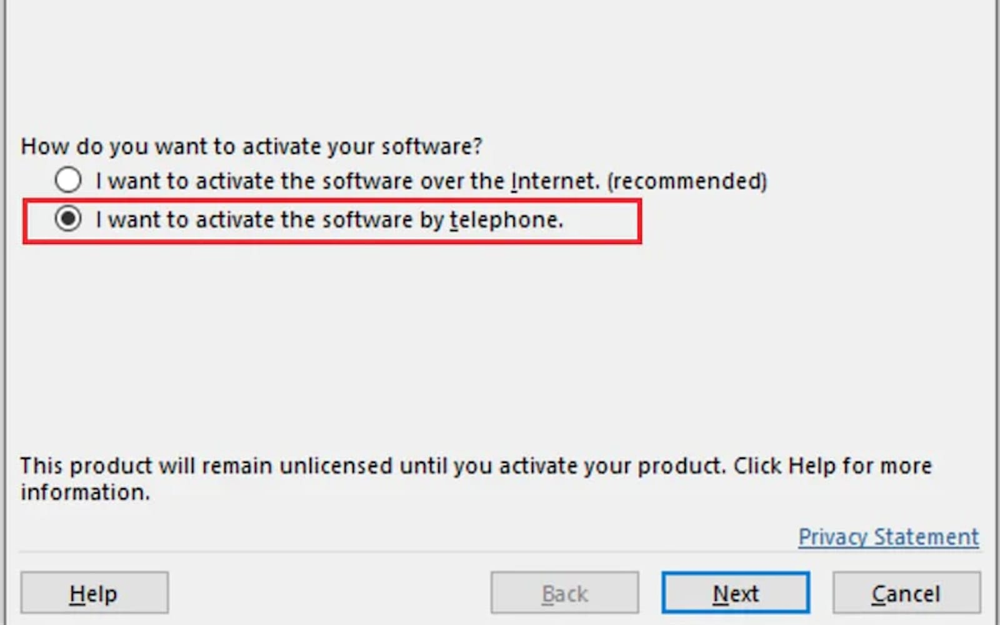
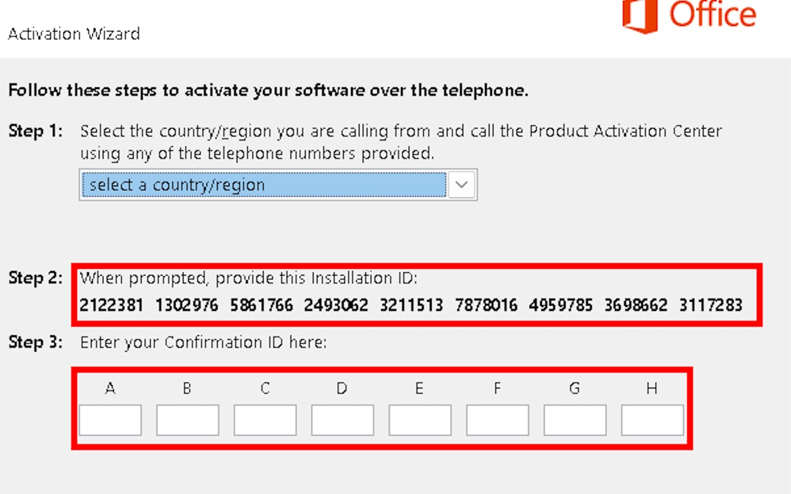

1. Descărcați fișierul de instalare Office de pe linkul de mai sus
2. Faceți dublu clic sau clic dreapta pe fișierul „ProPlus2019Retail.img”, apoi faceți clic pe Montare

3. Faceți dublu clic sau clic dreapta pe fișierul „Setup”, apoi faceți clic pe Deschidere

4. Așteptați finalizarea instalării/configurării

5. Faceți clic pe Start și deschideți orice aplicație Office (de exemplu, deschideți Word)
6. Așteptați să apară ecranul de activare
7. Introduceți cheia de produs pe care ați primit-o după achiziție, apoi faceți clic pe Activare Office

8. Gata, acum aveți Office-ul activat.

1. Dacă apare o fereastră asemănătoare, selectați „Activați prin telefon”. Se va afișa ecranul cu ID-ul de instalare și un număr de telefon gratuit, deservit de un sistem automat.

2. Copiați ID-ul de instalare afișat la pasul 2 din fereastra de activare.

3. Accesați site-ul de la linkul acesta:
GetCID
4. Introduceți ID-ul de instalare copiat anterior în secțiunea hașurată.

5. Apăsați pe Get confirmation ID.

6. Introduceți ID-ul de confirmare primit în fereastra de activare telefonică, iar produsul se va activa.